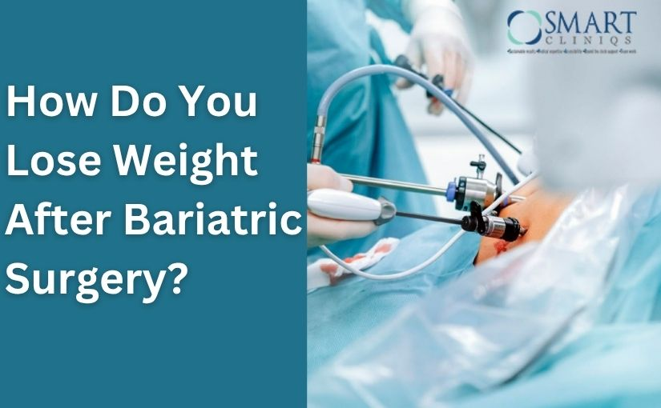

Bariatric surgery is a major step toward overcoming obesity and achieving lasting weight loss. But many patients wonder — how do you lose weight after bariatric surgery?
The truth is, surgery alone doesn’t make the weight disappear overnight. It’s a tool that helps you eat less, feel full faster, and improve your metabolism. Long-term success depends on your commitment to follow a proper diet, stay active, and maintain healthy habits.
How Do You Lose Weight After Bariatric Surgery?
“Bariatric surgery is a major step toward achieving weight loss. But many patients wonder — how do you lose weight after bariatric surgery?"
Book Your Appointment TodayThe surgery changes your digestive system to help reduce calorie intake and absorption, leading to steady and safe weight loss. Under the guidance of specialists like Dr. Atul Peters, who performs Bariatric Surgery in Delhi, patients can experience both physical transformation and improved overall health.
Understanding Bariatric Surgery
Before exploring what happens after surgery, it’s important to understand how bariatric surgery helps you lose weight.
There are several types of procedures—such as gastric sleeve, gastric bypass, and adjustable gastric banding—but they work in similar ways:
- Restriction: The size of the stomach is reduced, so you feel full quickly and eat smaller portions.
- Malabsorption: Some surgeries alter the digestive tract so the body absorbs fewer calories and nutrients.
These changes help control hunger, improve metabolism, and promote gradual fat loss while improving conditions like diabetes, high blood pressure, and joint pain.
How Does Bariatric Surgery Help You Lose Weight?

Bariatric surgery affects your body biologically and hormonally to make weight loss more achievable:
1. Reduced Food Intake
After surgery, your smaller stomach can hold only a small amount of food. This helps reduce calorie consumption drastically.
2. Hormonal Balance
The surgery reduces hunger hormones like ghrelin, leading to lower appetite and better control over cravings.
3. Improved Insulin Function
Better insulin sensitivity helps control blood sugar levels and supports fat burning.
4. Increased Satiety
You feel full sooner and for longer periods, preventing overeating.
5. Behavioral Change
Over time, you learn mindful eating habits—focusing on nutrition, portion control, and chewing slowly.
How Much Weight Loss After Bariatric Surgery Can You Expect?
The amount of weight loss varies depending on the type of surgery, your age, initial weight, and commitment to lifestyle changes. On average:
- Gastric Sleeve Surgery: Patients may lose 60–70% of excess body weight in 12–18 months.
- Gastric Bypass Surgery: Typically results in 70–80% excess weight loss within 12–18 months.
For example, someone who is 100 kg overweight may lose around 60–80 kg after successful surgery and lifestyle adaptation.
However, to achieve these results, following post-operative guidelines is crucial. Let’s explore how to ensure healthy and sustainable weight loss after bariatric surgery.
Stages of Weight Loss After Bariatric Surgery

Your weight loss journey unfolds in several phases:
1. Initial Rapid Weight Loss
During the first few months, you’ll notice a significant drop in weight due to reduced calorie intake and smaller meal portions. Most patients lose 25–30% of their excess weight during this period.
2. Steady Weight Loss
Your body adjusts to new eating habits, and you continue losing weight steadily. This is when exercise, balanced nutrition, and hydration become crucial to maintain fat loss and muscle strength.
3. Weight Stabilization
After about a year or two, weight loss slows down as your body stabilizes. This is the time to focus on maintaining your weight rather than losing more.
4. Maintenance Phase
Once your body reaches a new normal weight, ongoing discipline with food and exercise ensures you keep the weight off long-term.
Post-Surgery Diet Phases
Following the proper post-surgery diet is crucial for recovery and long-term success. It ensures your body adapts safely while promoting gradual weight loss.
Phase 1 – Clear Liquid Diet (During Hospital Stay)
- Water, clear soups, and coconut water to stay hydrated.
- Avoid caffeine and sugar.
- Take small sips throughout the day.
Phase 2 – Full Liquid Diet (2 Weeks from the Day of Discharge)
- Protein shakes, skimmed milk, and strained soups.
- Drink slowly and avoid gulping.
Phase 3 – Pureed Food Diet (3rd and 4th Week)
- Soft, blended foods like mashed lentils, pureed vegetables, and scrambled eggs.
- Eat small portions several times a day.
Phase 4 – Soft to Normal Diet (after completing a month post-surgery)
- Cooked vegetables, soft fruits, and minced chicken or fish.
- Focus on high-protein meals for healing and strength.
Phase 5 – Regular Balanced Diet (After 6 Weeks)
- Include lean meats, vegetables, and whole grains.
- Avoid processed, fried, and sugary foods.
- Maintain portion control and chew food well.
Behavioral Guidelines After Bariatric Surgery
Healthy eating behavior is key to sustaining your results after surgery. Here are some essential habits that support lasting success:
- Eat five small meals daily instead of large portions.
- Chew thoroughly and eat slowly.
- Avoid drinking liquids during meals and for 30 minutes before or after eating.
- Always prioritize proteins like eggs, chicken, and fish before other foods.
- Stop eating when you feel satisfied—not overly full.
- Avoid distractions like television or mobile phones while eating.
Practicing mindful eating not only aids digestion but also prevents overeating and discomfort.
Exercise and Physical Activity After Bariatric Surgery
Exercise complements your diet and accelerates fat loss. It also helps tone your body and improve mood and energy levels.
Post-Surgery Exercise Plan:

- Week 1–2: Gentle walking for 10–15 minutes daily.
- Week 3–6: Light stretching and low-impact exercises.
- After 6 Weeks: Gradually start moderate-intensity workouts like cycling, yoga, or swimming.
- After 3 Months: Add strength training and resistance exercises for muscle toning.
Aim for at least 150 minutes of physical activity per week. Always consult your surgeon or physiotherapist before starting any exercise routine.
Mental and Emotional Adjustments
Weight loss surgery changes more than just your body—it also affects your emotions and self-image.
You may face new challenges such as:
- Adjusting to smaller meals.
- Managing emotional eating habits.
- Dealing with changing social situations involving food.
Joining a support group or working with a nutritionist and psychologist can help you stay motivated and overcome setbacks.
Common Challenges After Bariatric Surgery
While the results are life-changing, some people face difficulties such as:
- Plateau in weight loss: This can happen if calorie intake increases or exercise decreases.
- Vitamin deficiencies: Due to reduced food absorption, you may need supplements like B12, iron, and calcium.
- Loose skin: Significant weight loss may cause excess skin, which can be managed through exercise or later surgery.
These challenges are manageable with proper medical guidance from specialists like Dr. Atul Peter's, a renowned expert in Bariatric Surgery.
How Do You Lose Weight After Bariatric Surgery?
“Bariatric surgery is a major step toward achieving weight loss. But many patients wonder — how do you lose weight after bariatric surgery?"
Book Your Appointment TodayLong-Term Success and Lifestyle Changes
The most successful bariatric patients view surgery as a tool, not a shortcut. They continue to eat healthily, stay active, and maintain positive habits for life.
Long-term weight maintenance involves:
- Continue follow-up with your bariatric team.
- Regular checkups for nutrition and vitamin levels.
- A balanced approach to food, exercise, and mental health.
With proper discipline, you can enjoy not only weight loss but also improved confidence, energy, and overall quality of life.
Summary
Bariatric surgery provides a safe and effective means of losing excess weight, regaining confidence, and enhancing overall health. But it works best when you actively participate in your recovery.
By following your dietary guidelines, exercising regularly, and adopting mindful eating habits, you can achieve long-term success. Under the expert care of Dr. Atul Peter's, a leading specialist in Bariatric Surgery in Delhi, patients experience not just weight loss, but an overall improvement in quality of life.
The surgery gives you a strong foundation — your commitment to healthy living ensures the transformation lasts a lifetime.